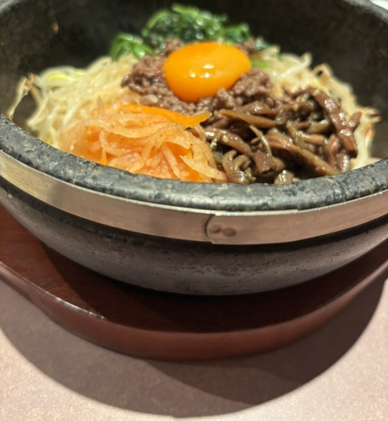
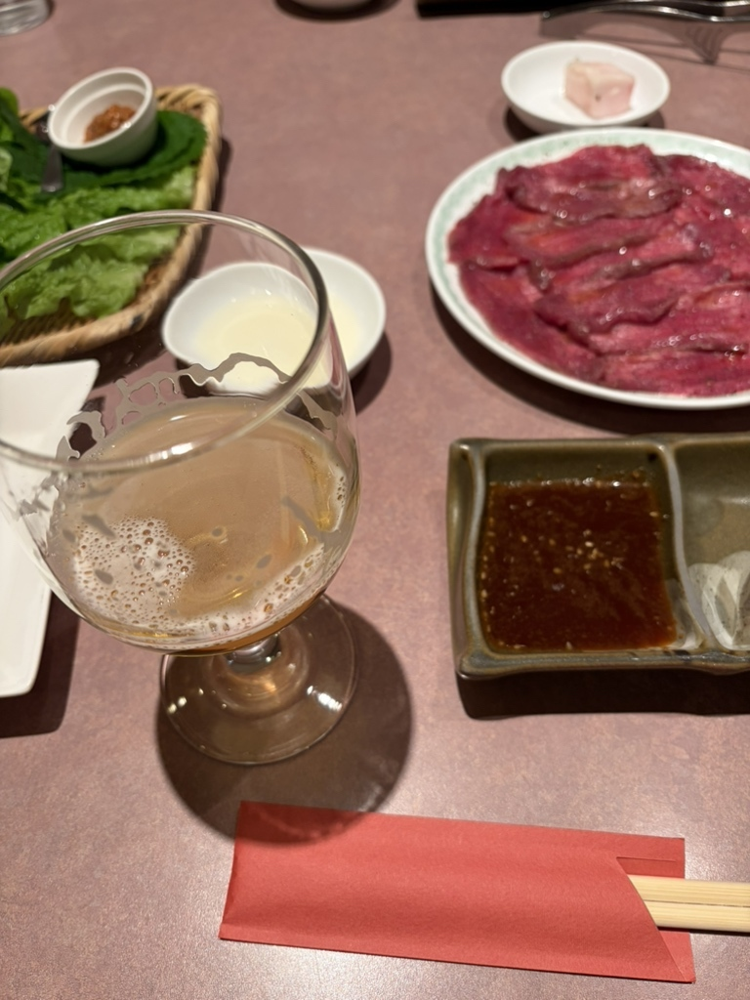

一頭買い
三つの門
当店の仕入れには、三つの条件がございます。
未経産の雌牛であること。
月齢30ヶ月以上であること。
山形牛であること。
赤身の美味しさを追いかけて、行き着いたのがこの三つです。優良な牧場から、条件にかなった牛だけを買い付けます。半頭でも、部位ごとでもなく、一頭買い。ホルモンも同じく一頭買いですので、他では出回らない稀少なタンやハラミを、鮮度そのままにお出しできます。
三つの条件をくぐり抜けた一頭だけが、当店の門を入ります。

未経産の雌牛。月齢30ヶ月以上。そして山形牛。三つの条件にかなった一頭を、まるごと買い付けております。
昼 11:30〜14:00（L.O.13:30）
夜 17:00〜21:30（L.O.20:50）
火曜日、および第1・第3・第5水曜日
19台ございます。
ご予約承ります。混み合うときはお受けできないことがございます。
各種クレジットカード（VISA／Master／JCB／AMEX／Diners）と電子マネー（交通系／nanaco／iD／QUICPay）をお使いいただけます。QRコード決済はご利用いただけません。
一頭買い
当店の仕入れには、三つの条件がございます。
赤身の美味しさを追いかけて、行き着いたのがこの三つです。優良な牧場から、条件にかなった牛だけを買い付けます。半頭でも、部位ごとでもなく、一頭買い。ホルモンも同じく一頭買いですので、他では出回らない稀少なタンやハラミを、鮮度そのままにお出しできます。
三つの条件をくぐり抜けた一頭だけが、当店の門を入ります。
稀少部位
特上タン塩は、週に一本しか入荷いたしません。シャトーブリアン、みすじ、ヒレ、サーロイン。一頭からわずかしか取れない山形牛の稀少部位も、一頭買いのままご用意しております。 その日に入る部位とお値段は、どうぞお気軽にお尋ねくださいませ。


冷麺のスープは、丸鶏から丹念にダシを取っております。厨房で作る六種類のスープは、どれも下ごしらえから一貫して、職人の手で仕上げたものです。締めの一杯まで、同じ厨房の手仕事でお出しします。
手作りの脇役
ポッサムキムチは、甘エビ・イカ・タコなどの魚介と季節の果物を、手づくりのキムチで包んだ、当店でしか召し上がれないオリジナルです。杏仁豆腐もコーヒーゼリーも店の手づくり、手づくりの絹とうふを使ったサラダもございます。


店内のご案内
ソファー席、掘りごたつ、仕切りのある席をご用意しております。ゆとりを持ったテーブル配置で、落ち着いてお食事いただけるよう心がけております。お子様連れのご家族も、どうぞご一緒にお越しください。



「1頭買いをしている焼肉店は珍しいとおもいます。雌の牛のサーロインが絶品でした。普通のロースも美味しい！」

「いつも行く安定にうまいザ・王道と言える焼肉屋さんです。古河市の焼肉屋ではここ行けば良いっていうお店です！」

「杏仁豆腐は安定の美味しさで、本当にここの杏仁豆腐超える店に出会ってない！！」
茶屋新田のこの場所に移って、二十年になります。牛の目利きも、スープの仕込みも、変わらずに続けております。皆様のお越しを、心よりお待ちしております。
お車でどうぞ
駐車場は19台ございます。JR古河駅からは徒歩で27分ほどかかりますので、お車でのご来店が便利です。屋根の上の白い牛が目印でございます。

| 住所 | 〒306-0051 茨城県古河市茶屋新田348-5 |
|---|---|
| 電話 | 0280-48-7029 |
| 営業時間 | 昼 11:30〜14:00（L.O.13:30） 夜 17:00〜21:30（L.O.20:50） |
| 定休日 | 火曜日、および第1・第3・第5水曜日 |
| 席数 | 64席（ソファー席・掘りごたつ・仕切りのある席） |
| 駐車場 | 19台 |
| お支払い | 各種クレジットカード（VISA／Master／JCB／AMEX／Diners）・電子マネー（交通系／nanaco／iD／QUICPay）。QRコード決済はご利用いただけません。 |